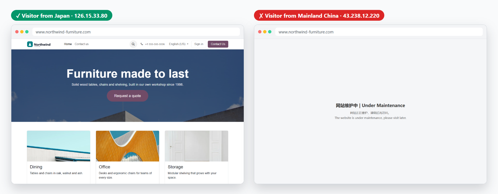
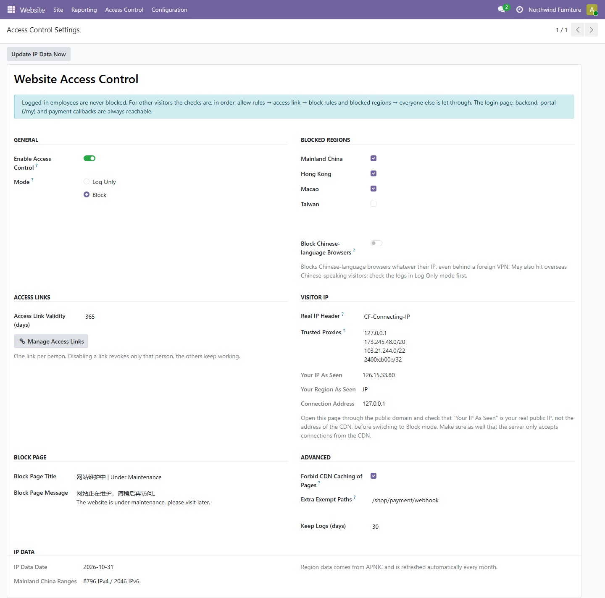
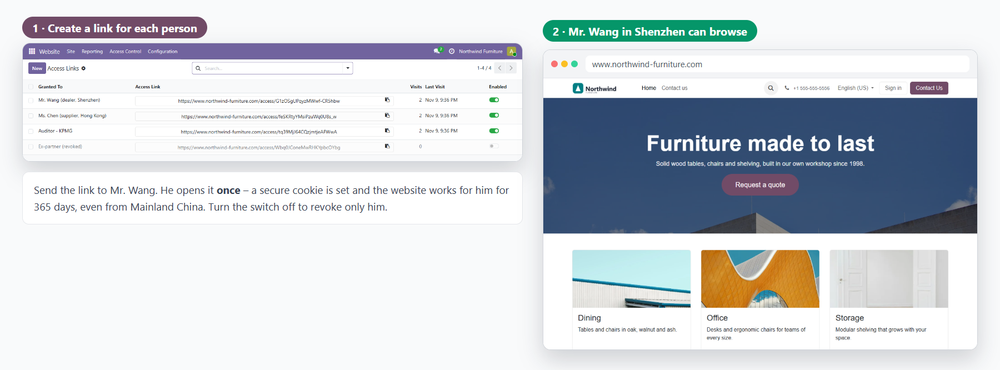
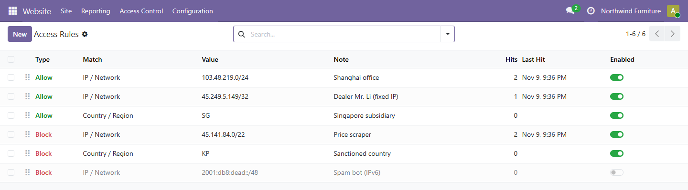
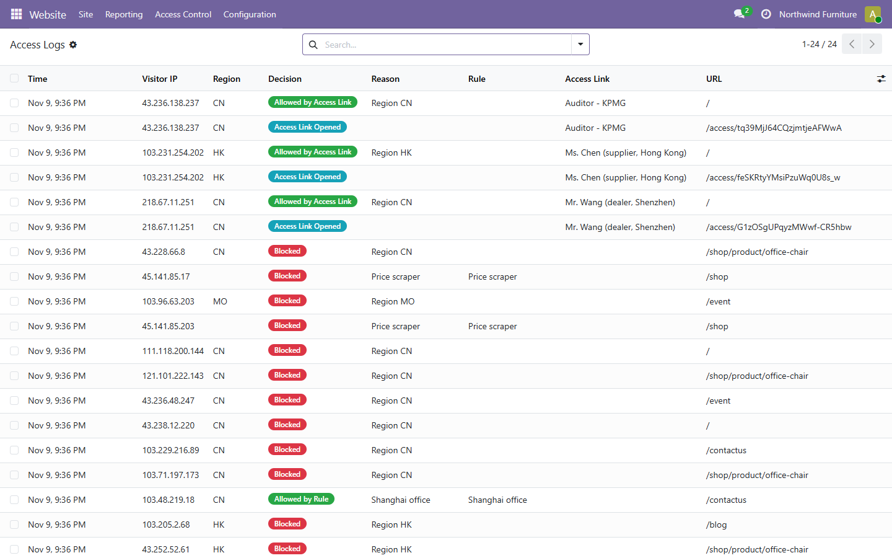
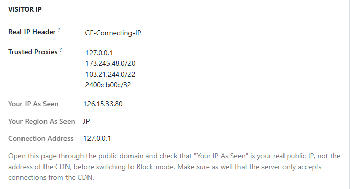
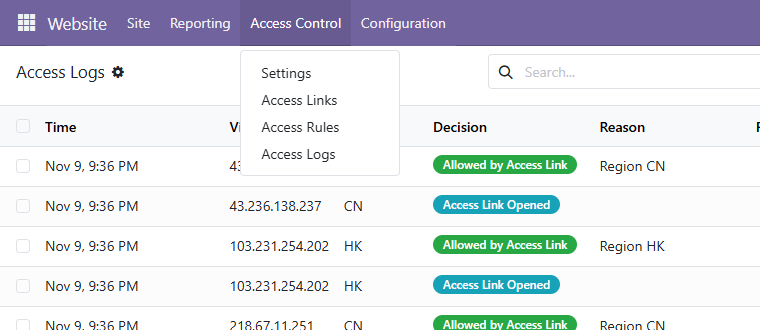
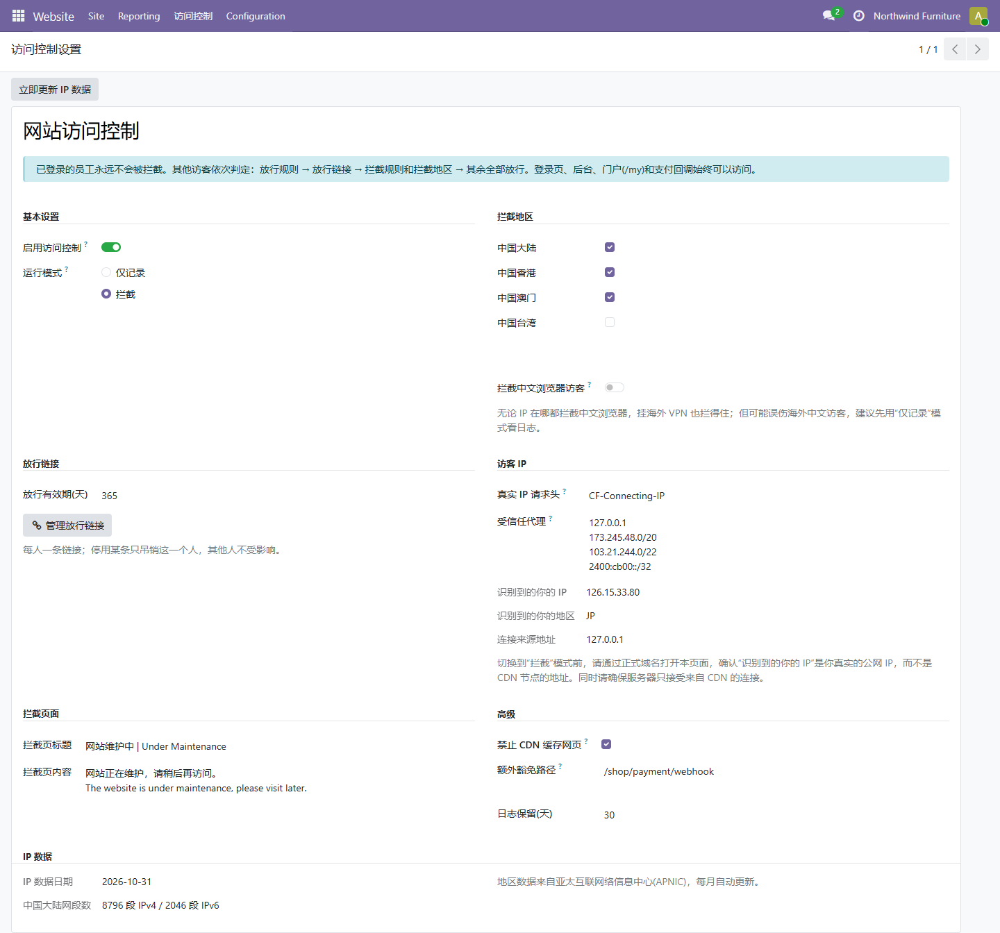
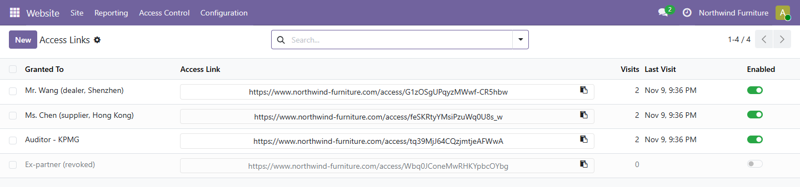

<section style="font-family:'Inter','Segoe UI',Roboto,Helvetica,Arial,sans-serif;color:#1F2937;background:#FFFFFF;">
<div class="container" style="max-width:1140px;margin:0 auto;padding:0 16px;">

    <!-- ============ BADGES ============ -->
    <div style="display:flex;justify-content:space-between;flex-wrap:wrap;align-items:center;border-bottom:1px solid #E5E7EB;padding:14px 0;">
        <div style="display:flex;flex-wrap:wrap;">
            <span style="background:#017E84;color:#fff;font-size:13px;font-weight:600;padding:5px 18px;margin:3px;border-radius:50px;">Community</span>
            <span style="background:#714B67;color:#fff;font-size:13px;font-weight:600;padding:5px 18px;margin:3px;border-radius:50px;">Enterprise</span>
            <span style="background:#374151;color:#fff;font-size:13px;font-weight:600;padding:5px 18px;margin:3px;border-radius:50px;">Odoo.sh / On-Premise</span>
        </div>
        <div style="display:flex;flex-wrap:wrap;">
            <span style="background:#875A7B;color:#fff;font-size:13px;font-weight:600;padding:5px 18px;margin:3px;border-radius:50px;">Odoo 19</span>
        </div>
    </div>

    <!-- ============ HERO ============ -->
    <div style="text-align:center;padding:64px 0 32px;">
        <div style="display:inline-block;background:#E6F4F4;color:#017E84;font-weight:700;font-size:13px;letter-spacing:1px;padding:6px 16px;border-radius:50px;margin-bottom:18px;">GEO IP BLOCKING FOR YOUR ODOO WEBSITE</div>
        <h1 style="font-size:46px;font-weight:800;line-height:1.15;color:#111827;margin:0 0 18px;">Website Access Control</h1>
        <h2 style="font-size:24px;font-weight:600;line-height:1.45;color:#374151;margin:0 auto 18px;max-width:880px;">
            Decide <span style="color:#DC2626;">who cannot see</span> your public website &ndash; by region, IP or network &ndash;
            and still let <span style="color:#059669;">the right people in</span> with a personal access link.
        </h2>
        <p style="font-size:17px;line-height:1.7;color:#6B7280;max-width:820px;margin:0 auto 30px;">
            Block visitors from Mainland China, Hong Kong, Macao or Taiwan with a bundled APNIC IP database that refreshes itself
            every month. Your employees, the login page, the backend, the customer portal and payment callbacks are never blocked.
        </p>

        <div style="display:flex;flex-wrap:wrap;justify-content:center;margin-bottom:36px;">
            <div style="background:#F9FAFB;border:1px solid #E5E7EB;border-radius:14px;padding:16px 22px;margin:6px;min-width:190px;">
                <div style="font-size:28px;font-weight:800;color:#DC2626;">4 regions</div>
                <div style="font-size:14px;color:#6B7280;">blocked with one tick each</div>
            </div>
            <div style="background:#F9FAFB;border:1px solid #E5E7EB;border-radius:14px;padding:16px 22px;margin:6px;min-width:190px;">
                <div style="font-size:28px;font-weight:800;color:#059669;">1 link</div>
                <div style="font-size:14px;color:#6B7280;">per person to let them in</div>
            </div>
            <div style="background:#F9FAFB;border:1px solid #E5E7EB;border-radius:14px;padding:16px 22px;margin:6px;min-width:190px;">
                <div style="font-size:28px;font-weight:800;color:#2563EB;">IPv4 + IPv6</div>
                <div style="font-size:14px;color:#6B7280;">IPs, CIDR networks, countries</div>
            </div>
            <div style="background:#F9FAFB;border:1px solid #E5E7EB;border-radius:14px;padding:16px 22px;margin:6px;min-width:190px;">
                <div style="font-size:28px;font-weight:800;color:#714B67;">Monthly</div>
                <div style="font-size:14px;color:#6B7280;">automatic IP data update</div>
            </div>
        </div>

        
        <p style="font-size:14px;color:#9CA3AF;margin-top:12px;">The same page at the same moment: a visitor from Japan sees the shop, a visitor from Mainland China sees your block page.</p>
    </div>

    <!-- ============ FEATURE GRID ============ -->
    <div style="padding:30px 0 40px;">
        <h2 style="text-align:center;font-size:32px;font-weight:800;color:#111827;margin:0 0 32px;">Everything you need to control access</h2>
        <div style="display:flex;flex-wrap:wrap;margin:0 -8px;">
            <div style="flex:1 1 250px;margin:8px;border:1px solid #E5E7EB;border-radius:14px;padding:20px;">
                <div style="font-size:26px;">&#127757;</div><div style="font-weight:700;font-size:17px;margin:6px 0;">Region Blocking</div>
                <div style="font-size:14px;color:#6B7280;line-height:1.6;">Block Mainland China, Hong Kong, Macao and Taiwan separately, IPv4 and IPv6, from official APNIC allocation data.</div></div>
            <div style="flex:1 1 250px;margin:8px;border:1px solid #E5E7EB;border-radius:14px;padding:20px;">
                <div style="font-size:26px;">&#128279;</div><div style="font-weight:700;font-size:17px;margin:6px 0;">Personal Access Links</div>
                <div style="font-size:14px;color:#6B7280;line-height:1.6;">One link per dealer, supplier or auditor. Opening it once lets them browse from anywhere; revoke one without touching the others.</div></div>
            <div style="flex:1 1 250px;margin:8px;border:1px solid #E5E7EB;border-radius:14px;padding:20px;">
                <div style="font-size:26px;">&#9989;</div><div style="font-weight:700;font-size:17px;margin:6px 0;">Allow &amp; Block Rules</div>
                <div style="font-size:14px;color:#6B7280;line-height:1.6;">Allow your office network or block a scraper by IP, CIDR network or country code. Allow rules always win.</div></div>
            <div style="flex:1 1 250px;margin:8px;border:1px solid #E5E7EB;border-radius:14px;padding:20px;">
                <div style="font-size:26px;">&#128483;</div><div style="font-weight:700;font-size:17px;margin:6px 0;">Chinese Browser Option</div>
                <div style="font-size:14px;color:#6B7280;line-height:1.6;">Optionally block browsers that ask for Chinese pages, even when the visitor uses a foreign VPN.</div></div>
            <div style="flex:1 1 250px;margin:8px;border:1px solid #E5E7EB;border-radius:14px;padding:20px;">
                <div style="font-size:26px;">&#9729;</div><div style="font-weight:700;font-size:17px;margin:6px 0;">CDN Real IP, Spoof-Proof</div>
                <div style="font-size:14px;color:#6B7280;line-height:1.6;">Reads the visitor IP from your CDN header (Cloudflare, Alibaba Cloud CDN&hellip;) only when the request really comes from your CDN.</div></div>
            <div style="flex:1 1 250px;margin:8px;border:1px solid #E5E7EB;border-radius:14px;padding:20px;">
                <div style="font-size:26px;">&#128203;</div><div style="font-weight:700;font-size:17px;margin:6px 0;">Access Log</div>
                <div style="font-size:14px;color:#6B7280;line-height:1.6;">Every blocked or let-through visit with IP, region, reason, rule, link and URL. Old entries are purged automatically.</div></div>
            <div style="flex:1 1 250px;margin:8px;border:1px solid #E5E7EB;border-radius:14px;padding:20px;">
                <div style="font-size:26px;">&#128064;</div><div style="font-weight:700;font-size:17px;margin:6px 0;">Log Only Mode</div>
                <div style="font-size:14px;color:#6B7280;line-height:1.6;">Watch what would be blocked for a few days before you switch to Block mode. Nobody is turned away meanwhile.</div></div>
            <div style="flex:1 1 250px;margin:8px;border:1px solid #E5E7EB;border-radius:14px;padding:20px;">
                <div style="font-size:26px;">&#128737;</div><div style="font-weight:700;font-size:17px;margin:6px 0;">Never Locks You Out</div>
                <div style="font-size:14px;color:#6B7280;line-height:1.6;">Logged-in employees, /web/login, the backend, the portal (/my), payment callbacks and live chat always stay reachable.</div></div>
            <div style="flex:1 1 250px;margin:8px;border:1px solid #E5E7EB;border-radius:14px;padding:20px;">
                <div style="font-size:26px;">&#9889;</div><div style="font-weight:700;font-size:17px;margin:6px 0;">Fast &amp; Flood-Safe</div>
                <div style="font-size:14px;color:#6B7280;line-height:1.6;">In-memory IP lookup by bisection, cached settings, and throttled logging so a flood of blocked requests cannot exhaust the database.</div></div>
        </div>
    </div>

    <!-- ============ HOW IT DECIDES ============ -->
    <div style="padding:36px 0;border-top:1px solid #F3F4F6;">
        <div style="font-size:13px;font-weight:700;color:#714B67;letter-spacing:1px;text-align:center;">HOW A VISIT IS DECIDED</div>
        <h2 style="text-align:center;font-size:32px;font-weight:800;color:#111827;margin:6px 0 24px;">Clear, predictable order</h2>
        <div style="display:flex;flex-wrap:wrap;margin:0 -6px;">
            <div style="flex:1 1 200px;margin:6px;background:#ECFDF5;border:1px solid #A7F3D0;border-radius:14px;padding:18px;">
                <div style="font-weight:800;font-size:15px;color:#059669;">1 &middot; Logged-in employee?</div>
                <div style="font-size:14px;color:#4B5563;line-height:1.6;margin-top:6px;">Always allowed. Admins can never block themselves.</div></div>
            <div style="flex:1 1 200px;margin:6px;background:#ECFDF5;border:1px solid #A7F3D0;border-radius:14px;padding:18px;">
                <div style="font-weight:800;font-size:15px;color:#059669;">2 &middot; Allow rule?</div>
                <div style="font-size:14px;color:#4B5563;line-height:1.6;margin-top:6px;">Office networks, partner IPs or whole countries you trust.</div></div>
            <div style="flex:1 1 200px;margin:6px;background:#ECFDF5;border:1px solid #A7F3D0;border-radius:14px;padding:18px;">
                <div style="font-weight:800;font-size:15px;color:#059669;">3 &middot; Access link?</div>
                <div style="font-size:14px;color:#4B5563;line-height:1.6;margin-top:6px;">A valid, still enabled link cookie lets the visitor in.</div></div>
            <div style="flex:1 1 200px;margin:6px;background:#FEF2F2;border:1px solid #FECACA;border-radius:14px;padding:18px;">
                <div style="font-weight:800;font-size:15px;color:#DC2626;">4 &middot; Block rule or region?</div>
                <div style="font-size:14px;color:#4B5563;line-height:1.6;margin-top:6px;">The block page is shown with HTTP 503 and logged.</div></div>
            <div style="flex:1 1 200px;margin:6px;background:#F9FAFB;border:1px solid #E5E7EB;border-radius:14px;padding:18px;">
                <div style="font-weight:800;font-size:15px;color:#374151;">5 &middot; Everyone else</div>
                <div style="font-size:14px;color:#4B5563;line-height:1.6;margin-top:6px;">Browses the website as usual, with no extra cost.</div></div>
        </div>
    </div>

    <!-- ============ SETTINGS ============ -->
    <div style="padding:36px 0;border-top:1px solid #F3F4F6;">
        <div style="font-size:13px;font-weight:700;color:#017E84;letter-spacing:1px;">01 &middot; ONE SETTINGS PAGE</div>
        <h3 style="font-size:26px;font-weight:800;color:#111827;margin:6px 0 10px;">Switch it on, tick the regions, done</h3>
        <p style="font-size:16px;line-height:1.7;color:#4B5563;margin:0 0 18px;">Everything is on one page under <b>Website &rsaquo; Access Control &rsaquo; Settings</b>: mode, blocked regions,
            access link validity, the CDN header, your own block page title and message, extra exempt paths, log retention, and the date of the IP data
            with an <b>Update IP Data Now</b> button.</p>
        
    </div>

    <!-- ============ ACCESS LINKS ============ -->
    <div style="padding:36px 0;border-top:1px solid #F3F4F6;">
        <div style="font-size:13px;font-weight:700;color:#017E84;letter-spacing:1px;">02 &middot; ACCESS LINKS</div>
        <h3 style="font-size:26px;font-weight:800;color:#111827;margin:6px 0 10px;">Block a whole region, but not your dealer in it</h3>
        <p style="font-size:16px;line-height:1.7;color:#4B5563;margin:0 0 18px;">Create one link per person and send it to them. When they open it, a cookie holding their personal random token lets them browse the website
            for as long as you decide (365 days by default), whatever network or phone they use. You see how often and when each link was last used,
            and switching a link off revokes that person immediately &ndash; the others keep working.</p>
        
    </div>

    <!-- ============ RULES ============ -->
    <div style="padding:36px 0;border-top:1px solid #F3F4F6;">
        <div style="font-size:13px;font-weight:700;color:#017E84;letter-spacing:1px;">03 &middot; ALLOW &amp; BLOCK RULES</div>
        <h3 style="font-size:26px;font-weight:800;color:#111827;margin:6px 0 10px;">Fine-tune with IPs, networks and countries</h3>
        <p style="font-size:16px;line-height:1.7;color:#4B5563;margin:0 0 18px;">Allow your Shanghai office network while Mainland China stays blocked, block a price scraper&rsquo;s network
            or any other country by its two-letter code. Each rule shows how many visits it matched and when. Disabled rules stay in the list,
            ready to be switched back on.</p>
        
        <div style="display:flex;flex-wrap:wrap;margin:18px -8px 0;">
            <div style="flex:1 1 250px;margin:8px;background:#F9FAFB;border-radius:12px;padding:16px;font-size:14px;line-height:1.6;color:#4B5563;"><b style="color:#111827;">IP / network</b><br/>single addresses or CIDR, IPv4 and IPv6: <code>1.2.3.4</code>, <code>1.2.3.0/24</code>, <code>240e::/20</code>.</div>
            <div style="flex:1 1 250px;margin:8px;background:#F9FAFB;border-radius:12px;padding:16px;font-size:14px;line-height:1.6;color:#4B5563;"><b style="color:#111827;">Country / region</b><br/>any two-letter code: <code>SG</code>, <code>KR</code>, <code>JP</code>&hellip;</div>
            <div style="flex:1 1 250px;margin:8px;background:#F9FAFB;border-radius:12px;padding:16px;font-size:14px;line-height:1.6;color:#4B5563;"><b style="color:#111827;">Allow always wins</b><br/>an allow rule overrides block rules and blocked regions.</div>
        </div>
    </div>

    <!-- ============ LOGS ============ -->
    <div style="padding:36px 0;border-top:1px solid #F3F4F6;">
        <div style="font-size:13px;font-weight:700;color:#017E84;letter-spacing:1px;">04 &middot; ACCESS LOG &amp; LOG ONLY MODE</div>
        <h3 style="font-size:26px;font-weight:800;color:#111827;margin:6px 0 10px;">See every decision before and after you enforce it</h3>
        <p style="font-size:16px;line-height:1.7;color:#4B5563;margin:0 0 18px;">Each blocked visit, each visit let through by a rule or a link, and each opened link is logged with the visitor IP,
            region, reason, rule, access link and URL. Start in <b>Log Only</b> mode to check who would be blocked, then switch to <b>Block</b>.
            Logs are kept for the number of days you choose.</p>
        
    </div>

    <!-- ============ CDN ============ -->
    <div style="padding:36px 0;border-top:1px solid #F3F4F6;">
        <div style="font-size:13px;font-weight:700;color:#017E84;letter-spacing:1px;">05 &middot; BEHIND A CDN OR PROXY</div>
        <div style="display:flex;flex-wrap:wrap;align-items:center;margin:0 -12px;">
            <div style="flex:1 1 420px;padding:0 12px;">
                <h3 style="font-size:26px;font-weight:800;color:#111827;margin:6px 0 10px;">The real visitor IP &ndash; and only from your CDN</h3>
                <p style="font-size:16px;line-height:1.7;color:#4B5563;margin:0 0 12px;">Enter the header your CDN sends (for example <code>CF-Connecting-IP</code> or <code>Ali-CDN-Real-IP</code>) and the
                    addresses your CDN connects from. The header is only trusted on requests coming from those addresses, so nobody can bypass the block by
                    sending a fake IP straight to your server.</p>
                <p style="font-size:16px;line-height:1.7;color:#4B5563;margin:0;">The page shows the IP and region it sees for you right now, so you can check the setup before switching on
                    Block mode. An option also stops the CDN from caching pages, so a blocked visitor never gets a cached copy.</p>
            </div>
            <div style="flex:1 1 420px;padding:12px;">
                
            </div>
        </div>
    </div>

    <!-- ============ MENU + CHINESE ============ -->
    <div style="padding:36px 0;border-top:1px solid #F3F4F6;">
        <div style="font-size:13px;font-weight:700;color:#017E84;letter-spacing:1px;">06 &middot; RIGHT INSIDE THE WEBSITE APP</div>
        <h3 style="font-size:26px;font-weight:800;color:#111827;margin:6px 0 10px;">Simple menus, English and Simplified Chinese</h3>
        <p style="font-size:16px;line-height:1.7;color:#4B5563;margin:0 0 18px;">A new <b>Access Control</b> menu in the Website app with Settings, Access Links, Access Rules and Access Logs,
            available to users with the <b>Website Access Control / Administrator</b> access right (Settings administrators have it automatically). The whole interface is translated into Simplified Chinese.</p>
        <div style="display:flex;flex-wrap:wrap;margin:0 -7px;">
            <div style="flex:1 1 360px;margin:7px;"><p style="font-size:13px;color:#9CA3AF;margin-top:6px;">Website &rsaquo; Access Control</p></div>
            <div style="flex:1 1 560px;margin:7px;"><p style="font-size:13px;color:#9CA3AF;margin-top:6px;">Settings in Simplified Chinese</p></div>
        </div>
    </div>

    <!-- ============ ACCESS LINK LIST ============ -->
    <div style="padding:36px 0;border-top:1px solid #F3F4F6;">
        <div style="font-size:13px;font-weight:700;color:#017E84;letter-spacing:1px;">07 &middot; MANAGE LINKS IN ONE LIST</div>
        <h3 style="font-size:26px;font-weight:800;color:#111827;margin:6px 0 10px;">Copy, count, revoke</h3>
        <p style="font-size:16px;line-height:1.7;color:#4B5563;margin:0 0 18px;">Add a line, type the person&rsquo;s name and copy the link with one click. Visits and the last visit are counted per link;
            disabled links are greyed out and no longer open anything.</p>
        
    </div>

    <!-- ============ TECH ============ -->
    <div style="padding:30px 0 30px;">
        <div style="background:#F9FAFB;border-radius:16px;padding:28px;">
            <h3 style="font-size:22px;font-weight:800;color:#111827;margin:0 0 14px;">Light, safe and built the Odoo way</h3>
            <div style="display:flex;flex-wrap:wrap;font-size:15px;line-height:1.9;color:#374151;">
                <div style="flex:1 1 400px;padding-right:16px;">
                    &#9679; Depends only on the standard <code>website</code> module<br/>
                    &#9679; APNIC IP data bundled, refreshed by a monthly scheduled action<br/>
                    &#9679; Optional GeoIP fallback for addresses outside the APNIC area<br/>
                    &#9679; Stand-alone block page: nothing of your site leaks to blocked visitors
                </div>
                <div style="flex:1 1 400px;">
                    &#9679; Blocked visitors get HTTP 503 with <code>noindex</code><br/>
                    &#9679; Works with language prefixes, sitemap, robots.txt and JSON routes<br/>
                    &#9679; Dedicated administrator group, no Python dependencies<br/>
                    &#9679; English &amp; Simplified Chinese included
                </div>
            </div>
        </div>
    </div>

    <!-- ============ NOTE ============ -->
    <div style="padding:0 0 30px;">
        <div style="background:#FFFBEB;border:1px solid #FDE68A;border-radius:14px;padding:20px 24px;font-size:15px;line-height:1.7;color:#78350F;">
            <b>Good to know:</b> IP blocking stops ordinary visitors, not a determined one using a VPN in another region. Combine it with the Chinese
            browser option for stronger filtering, and use <b>Log Only</b> mode first to check the result on your real traffic.
        </div>
    </div>

    <!-- ============ FAQ ============ -->
    <div style="padding:10px 0 40px;">
        <h2 style="text-align:center;font-size:32px;font-weight:800;color:#111827;margin:0 0 26px;">FAQ</h2>
        <div style="border:1px solid #E5E7EB;border-radius:12px;padding:18px 20px;margin-bottom:12px;">
            <div style="font-weight:700;font-size:16px;color:#111827;">Can I lock myself out?</div>
            <div style="font-size:15px;color:#4B5563;line-height:1.7;margin-top:6px;">No. The login page and the backend are never blocked, and logged-in employees can always browse the website.</div></div>
        <div style="border:1px solid #E5E7EB;border-radius:12px;padding:18px 20px;margin-bottom:12px;">
            <div style="font-weight:700;font-size:16px;color:#111827;">Will my customers still be able to pay and use the portal?</div>
            <div style="font-size:15px;color:#4B5563;line-height:1.7;margin-top:6px;">Yes. The customer portal (<code>/my</code>) and payment provider callbacks are always reachable. You can add more exempt paths, for example a webhook URL.</div></div>
        <div style="border:1px solid #E5E7EB;border-radius:12px;padding:18px 20px;margin-bottom:12px;">
            <div style="font-weight:700;font-size:16px;color:#111827;">My website is behind Cloudflare / Alibaba Cloud CDN. Does it work?</div>
            <div style="font-size:15px;color:#4B5563;line-height:1.7;margin-top:6px;">Yes. Enter the real IP header of your CDN and its back-to-origin addresses in <b>Trusted Proxies</b>. The settings page shows the IP it sees for you, so you can check it before enforcing.</div></div>
        <div style="border:1px solid #E5E7EB;border-radius:12px;padding:18px 20px;margin-bottom:12px;">
            <div style="font-weight:700;font-size:16px;color:#111827;">How accurate is the region data?</div>
            <div style="font-size:15px;color:#4B5563;line-height:1.7;margin-top:6px;">It comes from the official APNIC delegation file, the registry that allocates IP addresses in the Asia-Pacific region, and is refreshed every month automatically or with one click.</div></div>
        <div style="border:1px solid #E5E7EB;border-radius:12px;padding:18px 20px;margin-bottom:12px;">
            <div style="font-weight:700;font-size:16px;color:#111827;">Can I block other countries?</div>
            <div style="font-size:15px;color:#4B5563;line-height:1.7;margin-top:6px;">Yes, add a block rule with any two-letter country code. Countries outside the Asia-Pacific region are recognized when an Odoo GeoIP database is configured.</div></div>
        <div style="border:1px solid #E5E7EB;border-radius:12px;padding:18px 20px;margin-bottom:12px;">
            <div style="font-weight:700;font-size:16px;color:#111827;">Can I change the block page?</div>
            <div style="font-size:15px;color:#4B5563;line-height:1.7;margin-top:6px;">Yes, its title and message are set on the settings page, in any language.</div></div>
        <div style="border:1px solid #E5E7EB;border-radius:12px;padding:18px 20px;margin-bottom:12px;">
            <div style="font-weight:700;font-size:16px;color:#111827;">Community or Enterprise?</div>
            <div style="font-size:15px;color:#4B5563;line-height:1.7;margin-top:6px;">Both editions of Odoo 19, on-premise and Odoo.sh.</div></div>
    </div>

    <!-- ============ CONTACT ============ -->
    <div style="text-align:center;padding:40px 20px;margin-bottom:40px;background:linear-gradient(135deg,#0B1F33 0%,#017E84 100%);border-radius:18px;color:#fff;">
        <h2 style="font-size:28px;font-weight:800;margin:0 0 10px;color:#fff;">Need help with the setup or your CDN?</h2>
        <p style="font-size:17px;margin:0 0 14px;color:#E6F4F4;">Free support for installation and configuration questions.</p>
        <p style="font-size:18px;font-weight:700;margin:0;color:#fff;">&#9993; 18438630181@163.com</p>
    </div>

</div>
</section>
